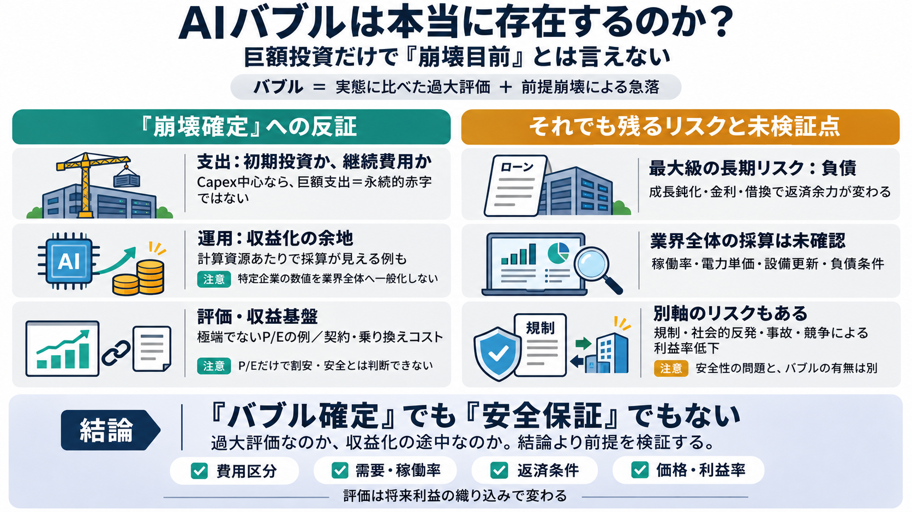

アンソロピックIPOの想定評価額が約206兆円に急低下──投資家が見極めるAIバブル（Forbes JAPAN） - Yahoo!ニュース
公開価格はまだ決まっておらず、アンソロピックはコメントを控えた。直近四半期に170億ドル（約2兆6860億円）を売り上げたAI企業に対しても、投資家は想定企業価値の引き下げを求めている。 ●売上高は前年の12倍超、それでも投資家の…

AI×評価の真偽
「崩壊が目前」という前提は妥当か。巨額投資・採算・P/Eなどの見え方から、単純な“泡＝崩壊確定”を点検します。
“バブル”の定義
ここでのAIバブルは、(1)実態（収益・利益）に比べ評価が不当に高いこと、(2)前提が崩れたとき市場価値が急落することです。
投資は“永遠”か？
巨額支出が「継続コスト」ではなく「初期投資（データセンター等）」なら、赤字が永遠に続く前提は弱まります。
運用の採算
AnthropicのS-1にある「計算資源1ドルあたり2.08ドル稼いでいる」という趣旨が、運用面では採算が見え得る根拠になります。
最大の長期リスク
データセンター建設の返済（借入）が重いと、成長が鈍化した際に資金繰りが問題化し得ます。筆者は“返せない”とは断じないものの、長期リスクとして最大級と見ています。
過熱の指標
Alphabet、Meta、NVIDIAなどでP/Eが20台前後に保たれている例を挙げ、「ドットコムのような異常な過熱」が見えにくいと論じます。評価の異常が弱いなら、“崩壊が目前”の確度も下がります。
儲ける仕組み
モデルがコモディティ化し得ても、企業内導入の契約・運用組み込み、ユーザーの乗り換えコスト（ロックイン）で収益が維持される可能性があります。
リスクは別軸
規制、データセンターへの反発、セキュリティ事故、自律的AIによる被害可能性などはあるが、これらを“バブル崩壊”という一本の物語に回収し切れないと筆者は言います。
反証の骨格
未検証の穴
提示数値が特定企業の開示や概算に依存し、業界全体の稼働率・電力単価・設備更新・負債条件・採算ライン・規制変更を網羅できていない点が弱点になります。
相場の揺れ
報道では、アンソロピックの想定企業価値が話題化後に投資家の見直しで下がったことや、S-1修正に基づき売上成長はある一方で評価倍率の引き下げ検討があるとされています。
読むべき観点
投資判断としては、(1)負債の条件、(2)需要と稼働率の持続性、(3)規制と社会的反発の進行、(4)価格/利益率への競争効果を追加で確認すべきです。
結論（筆者）
この投稿は「バブル確定説」に対する反証、または楽観・悲観の両方を点検する材料として読む価値があります。一方、負債と市場織り込みの前提が崩れれば別の損失経路があり得るため、心理論（wishcast）だけに置き換えるのは危険です。
Takeaway
AIバブル論は単一の筋書きになりにくく、「過大評価」か「成長が収益化に結びついている途中」かは、財務・稼働・負債条件で確かめる必要があります。
公開価格はまだ決まっておらず、アンソロピックはコメントを控えた。直近四半期に170億ドル（約2兆6860億円）を売り上げたAI企業に対しても、投資家は想定企業価値の引き下げを求めている。 ●売上高は前年の12倍超、それでも投資家の…
[4:52] には[音楽]成長投資が収益性を圧迫する リスクがあります。AI企業は反動体を 買えば終わりではあり[音楽]ません。 [5:02] 計算資源を確保し、データセンターを稼働 させ、電力[音楽]を供給し、稼働率を [5:08] 高め…
# Anthropic ID: 49NlR6zHvu8c Website: www.anthropic.com Legal name: Anthropic PBC Headquarters: San Francisco, Californi…
AIブームの波に火をつけたのは、企業群によるデータセンターへの投資が背景にあります。AIを「製造する工場」と言えるのが、アマゾン･ドットコム［AMZN］、マイクロソフト［MSFT］、アルファベット（グーグル）［GOOGL］といった「ハイパー…
跳至導覽 跳過主要內容 跳至右欄 [...] 6. now.com 財經 7. Fortune Insight 8. 28Hse.com 9. AM730 10. Infocast 11. 鉅亨網…